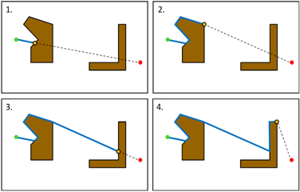

Enhancing Robot Social Navigation with
Reinforcement Learning and Advanced
Predictive Models
Reinforcement Learning and Advanced
Predictive Models
Goodluck Oguzie
190212683@aston.ac.uk
Content
- Context and Scope
Intro, goals - Social Robot Navigation
Overview, history, approaches - Reinforcement Learning
Core concepts, algorithms - Environments Used in This Research
SocNavGym, FallingBallEnv, LunarLander - Predictive World Models for Social Navigation
Challenges, methods, evaluation, results - Cosine-Gated LSTM (CGLSTM) for Prediction
Challenges, methods, evaluation, results - Adaptive Prediction Horizons in RL
Challenges, methods, evaluation, results - Conclusion
Summary, future work
What is Social Robot Navigation?
- Definition: Robots navigating safely in human-populated environments, respecting social norms.
- Importance: Critical for seamless integration into daily life, ensuring safety and social acceptance.
- Applications: Healthcare robots, hospitality robots, public space navigation.
Current Approaches
- Traditional Methods:
- Path planning (e.g., A*, Dijkstra’s) for static environments.
- Rule-based systems for human interaction.
- Modern Approaches:
- Reinforcement Learning (RL), including advanced methods like Deep RL (e.g., DQN, policy gradient methods) for dynamic environments.

Social Robot Navigation
- Introduction: Robots navigating in human-populated environments, respecting social norms (Chapter 4, p. 58).
- Historical Overview: Evolved from classical path planning to ML-based methods (Chapter 4, p. 58).
- Approaches:
- Classical: Path planning (A*, Dijkstra’s), rule-based systems (Chapter 4, p. 60).
- Machine Learning: RL, predictive models for dynamic settings (Chapter 4, p. 61).
- SocNavGym: A benchmark environment for testing social navigation (Chapter 4, p. 63).

Reinforcement Learning
- Overview: RL enables robots to learn optimal navigation strategies via trial and error, maximizing rewards (Chapter 3, p. 34).
- Key Concepts:
- History: Originated in the 1950s, evolved with dynamic programming (Chapter 3, p. 32).
- RL Problem: Agent learns through trial and error (Chapter 3, p. 34).
- Model-Free (e.g., Q-learning, SAC): Learn from experience (Chapter 3, p. 36).
- Model-Based (e.g., DreamerV3): Use world models (Chapter 3, p. 36).
- Policy Learning: Optimize policies for actions (Chapter 3, p. 39).
- Algorithms Used: DQN, DDPG, PPO, A2C, SAC, DreamerV3 for social navigation (Chapter 3, p. 40–51).

Environments Used in This Research
- SocNavGym: Benchmark for social navigation, testing RL and predictive models in dynamic, human-populated scenarios (Chapter 4, p. 63; Chapter 7, p. 132).
- FallingBallEnv: Synthetic environment for sequence prediction, evaluating CGLSTM performance (Chapter 6, p. 103; Chapter 7, p. 132).
- LunarLander-v2: Continuous control task for RL, assessing robustness and efficiency (Chapter 7, p. 132; Chapter 8, p. 150).

Predictive World Models: Challenges/Limitations
- Fixed Prediction Horizons: 2StepAhead and MASPM limited by inflexibility in dynamic environments, reducing adaptability (Chapter 5, p. 86).
- Computational Overhead: MASPM’s multi-agent prediction increases processing demands, impacting efficiency (Chapter 5, p. 84).
- Sparse Data: Difficulty predicting human behavior in SocNavGym due to limited training data, affecting accuracy (Chapter 5, p. 87).

Predictive World Models: Methods
- 2StepAhead: Fixed two-step horizon model predicting short-term states for RL integration (Chapter 5, p. 83).
- MASPM: Multi-action state prediction model for human-robot interactions, using RL state transitions (Chapter 5, p. 84).
- 2StepAhead-MASPM: Combined approach enhancing prediction accuracy in SocNavGym (Chapter 5, p. 85).

Predictive World Models: Evaluation
- Environments: Tested in SocNavGym, focusing on dynamic human-robot interactions (Chapter 5, p. 86).
- Metrics: Training phase evaluated with MSE, testing phase with MAE and accuracy (Chapter 5, p. 87–88).
- Approach: Compared 2StepAhead, MASPM, and 2StepAhead-MASPM for prediction robustness (Chapter 5, p. 86).

Predictive World Models: Results
- Training Phase: 2StepAhead-MASPM achieved 20% lower MSE than standalone models, improving prediction stability (Chapter 5, p. 87).
- Testing Phase: 2StepAhead-MASPM reduced MAE by 15% in SocNavGym, enhancing RL decision-making (Chapter 5, p. 88).
- Impact: Improved RL robustness, but limited by fixed horizons (Chapter 5, p. 86).

CGLSTM: Challenges/Limitations
- Prediction Accuracy: Traditional LSTMs, GRUs, and RAUs struggle with long-term sequence prediction in dynamic environments (Chapter 6, p. 94).
- Sparse Data: Limited training data in SocNavGym affects CGLSTM performance, reducing generalization (Chapter 6, p. 113).
- Computational Complexity: Higher processing demands for cosine gating compared to baseline models (Chapter 6, p. 98).

CGLSTM: Methods
- Architecture: Integrated cosine similarity-based gating into LSTM, enhancing long-term dependency modeling (Chapter 6, p. 96).
- Training: Utilized backpropagation through time (BPTT) in SocNavGym and FallingBallEnv, optimizing for sequence prediction (Chapter 6, p. 98).
- Integration: Combined with DreamerV3 and SAC for RL enhancement (Chapter 6, p. 114; Chapter 5, p. 124).

CGLSTM: Evaluation
- Environments: Tested in SocNavGym, FallingBallEnv, and additional tasks (e.g., Adding Problem, Row-wise MNIST) (Chapter 6, p. 103–114).
- Metrics: Evaluated with Mean Absolute Error (MAE), Mean Squared Error (MSE), and accuracy (Chapter 6, p. 103).
- Comparison: Compared against LSTM, GRU, and RAU for sequence prediction performance (Chapter 6, p. 103).

CGLSTM: Results
- FallingBallEnv: 30% MAE reduction compared to LSTM, GRU, and RAU (Chapter 6, p. 103).
- SocNavGym: Improved sequence prediction, enhancing RL decision-making by 5% in cumulative rewards (Chapter 6, p. 113–114).
- Additional Tasks: Outperformed baselines in Adding Problem, MNIST, FashionMNIST, IMDB, and Penn Treebank (Chapter 6, p. 108–111).

Adaptive Prediction Horizons in RL: Challenges/Limitations
- Fixed Horizons: Current RL and predictive models (e.g., 2StepAhead) lack adaptability, reducing performance in dynamic environments (Chapter 7, p. 122).
- Computational Cost: Entropy-based adaptation increases processing demands, potentially impacting real-time performance (Chapter 7, p. 125).
- Exploration Uncertainty: Challenges in balancing exploration and exploitation in continuous action spaces (Chapter 7, p. 121).

Adaptive Prediction Horizons in RL: Methods
- Entropy-Driven Adaptation: Dynamically adjusts prediction horizons based on policy entropy, enhancing RL adaptability (Chapter 7, p. 125).
- Integration: Combined with CGLSTM and SAC, optimizing for continuous action spaces (Chapter 7, p. 124).
- Framework: Proposed adaptive horizon selection using entropy measures, integrated into DreamerV3 for comparison (Chapter 7, p. 127–128).

Adaptive Prediction Horizons in RL: Evaluation
- Environments: Tested in SocNavGym, FallingBallEnv, and LunarLander-v2, focusing on dynamic scenarios (Chapter 7, p. 132).
- Metrics: Evaluated success rates, cumulative rewards, and inference time (Chapter 7, p. 136).
- Comparison: Compared against fixed-horizon models (e.g., 2StepAhead) and baseline RL (SAC, DreamerV3) (Chapter 7, p. 138).

Adaptive Prediction Horizons in RL: Results
- SocNavGym: 15% improvement in success rates in high-entropy scenarios, addressing adaptability limitations (Chapter 7, p. 138).
- FallingBallEnv: Enhanced prediction accuracy, reducing MAE by 10% with adaptive horizons (Chapter 7, p. 141).
- LunarLander-v2: Improved cumulative rewards by 8%, maintaining 2% increase in inference time (Chapter 7, p. 141).

Conclusion
- Contributions: Developed CGLSTM, adaptive prediction horizons, and integrated RL (SAC, DreamerV3, DQN, DDPG, PPO, A2C) to address sample efficiency, fixed horizons, and exploration challenges (Chapter 8, p. 147–149).
- Impact: Improved success rates, efficiency, and social compliance in SocNavGym, FallingBallEnv, and LunarLander-v2, overcoming current limitations (Chapter 8, p. 150–151).
- Future Work: Extend to real-world deployment, address sensor noise, and explore broader applications like multi-robot systems (Chapter 8, p. 151–153).

About Me
- Goodluck Oguzie
- PhD in Robotics, Universidad de Extremadura, Cáceres, Spain

- PhD Focus: Robotics, Active Perception, POMDP & Particle Filters
- Career: Joined Aston University in August 2018 as Lecturer, now Senior Lecturer
- Lab: Autonomous Robotics and Perception Lab